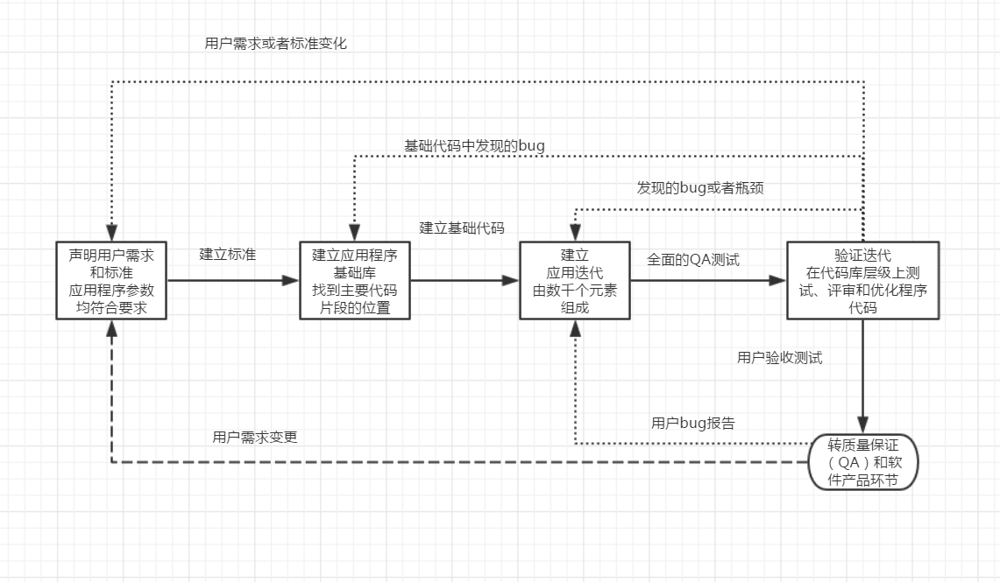

7. 阅读书摘 book excerpt¶
本篇文字标题
###################################################################
第几章
*******************************************************************
第几节
===================================================================
第几小节
-------------------------------------------------------------------
| 行符号（换行符）
* 无序列表
# 有序列表
7.1. 王垠博客文摘¶
7.1.1. 世界观¶
7.1.1.1. Unix 的缺点¶
谈 Linux，Windows 和 Mac http://www.yinwang.org/blog-cn/2013/03/07/linux-windows-mac Unix 的缺点 Unix Hater’s Handbook 操作系统 Multics，Lisp Machine Niklaus Wirth（也就是 Pascal 语言的设计者）的 Oberon 操作系统 去除头脑里的宗教，偏激，仇恨和鄙视。每次仇恨一个东西，你就失去了向它学习的机会。 Unix的缺陷 http://www.kuqin.com/linux/20120824/329555.html 通常所说的“Unix哲学”包括以下三条原则[Mcllroy]：
- 一个程序只做一件事情，并且把它做好。
- 程序之间能够协同工作。
- 程序处理文本流，因为它是一个通用的接口。
这三条原则当中，前两条其实早于 Unix 就已经存在，它们描述的其实是程序设计最基本的原则——模块化原则。任何一个具有函数和调用的程序语言都具有这两条原则。简言之，第一条针对函数，第二条针对调用。所谓“程序”，其实是一个叫 “main” 的函数（详见下文）。
所以只有第三条（用文本流做接口）是 Unix 所特有的。
7.1.1.2. 关于语言的思考 王垠¶
http://www.yinwang.org/blog-cn/2013/04/17/languages 多学几种语言
我今天想说其实就是，没有任何一种语言值得你用毕生的精力去“精通”它。“精通”其实代表着“脑残”——你成为了一个高效的机器，而不是一个有自己头脑的人。你必须对每种语言都带有一定的怀疑态度，而不是完全的拥抱它。每个人都应该学习多种语言，这样才不至于让自己的思想受到单一语言的约束，而没法接受新的，更加先进的思想。这就像每个人都应该学会至少一门外语一样，否则你就深陷于自己民族的思维方式。有时候这种民族传统的思想会让你深陷无须有的痛苦却无法自拔。
7.2. Oralce PL/SQL Best Practices Oralce PL/SQL最佳实践¶
7.2.1. 全局建议¶
- 应用程序层面的工作流程
- 构建单个程序的工作流程
7.2.1.1. 应用程序层面的工作流程¶
7.2.1.1.1. 步骤1：定义需求和标准¶
变更是需求收集工作的基本特征。能做的最好的事情就是集中力量，完成此时此刻的应用程序的明确功能。
站在用户的立场去考虑他们合乎逻辑的真实需要。
需求确定应用于每个程序的标准； 命名规范和编码标准
团队的每个成员以类似的风格编写程序代码。
- SQL访问
- SQL语句是程序代码中最易变的元素，会随着表结构和表之间关系随时变化。 查询、更新和其他SQL操作是导致大部分应用程序性能问题的根源。 对于PL/SQL程序代码中的SQL语句，需要预先设定在程序代码中使用SQL的时间、位置和方式。
- 错误管理
- 对错误的抛出、处理和传递方式要予以规范，否则当问题出现时，用户将很难理解如何处理问题，开发人员调试和修改应用程序会更加困难。
7.2.1.1.2. 步骤2：建立应用程序基础¶
- 建立支持这些规则能够被遵循的正式过程
- 提出清晰定义的流程，以及支持工具，让开发人员可以毫不费力地遵循这些规则。
- 规则实现自动化
- 让规则能自动执行。
- 命名规范和编码标准
- 团队的每个成员以类似的风格编写程序代码。创建代码模板和代码片段供参考。
- SQL访问
- SQL语句是程序代码中最易变的元素，会随着表结构和表之间关系随时变化。 查询、更新和其他SQL操作是导致大部分应用程序性能问题的根源。 对于PL/SQL程序代码中的SQL语句，需要预先设定在程序代码中使用SQL的时间、位置和方式。 把数据访问当作一个服务，而不是当作需要反复编写的代码。 SQL使用规则：不要编写它！
- 错误管理
- 对错误的抛出、处理和传递方式要予以规范，否则当问题出现时，用户将很难理解如何处理问题，开发人员调试和修改应用程序会更加困难。 实现应用程序范围层面的，一致性错误日志、错误抛出和处理机制的最佳方式是，使开发团队使用单个、共享的软件包（所使用的数据库表是经过精心设计的）来完成这个任务。